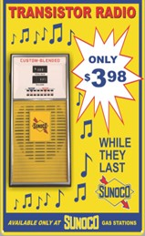

With its compact size, affordability, and ability to bring AM/FM radio into the palm of your hand, the Transistor Radio is a game-changer for portable entertainment. Get yours today and experience the revolution in sound!

Portable: Take it anywhere - the beach, the park, or on your travels.
Durable: Built to last with rugged construction.
Affordable: The most cost-effective radio for personal use.
Limited-Time Offer
Buy one now and get 10% off your next purchase! Hurry, offer ends soon!